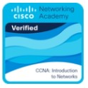
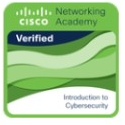
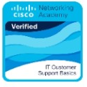
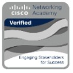
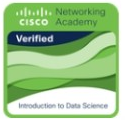

Hello
Welcome to my Portfolio
Abulele Ntshiyantshiya
Thank you for stopping by. Explore my education, hands-on experience, skills and certifications, and feel free to get in touch.
or press Enter
Thank you for stopping by. Explore my education, hands-on experience, skills and certifications, and feel free to get in touch.
or press Enter
I am an ICT graduate with hands-on experience in IT support, networking, and cybersecurity gained across two internships. I am seeking entry-level opportunities where I can apply my knowledge, gain practical experience, and grow within the IT industry.
East London, South Africa
@Abulele04
Abulele Ntshiyantshiya
@abu_lele0
abulelentshiyantshiya@gmail.com
Diploma in ICT Support Services
Completed: 2025
National Senior Certificate (Bachelor's Pass)
Completed: 2021
Department of Agriculture | MICT SETA Internship Programme
iYunivesithi Walter Sisulu





Network Controller - Department of Agriculture (Amathole Region)
IT Network & Support Technician Lead - iYunivesithi Walter Sisulu